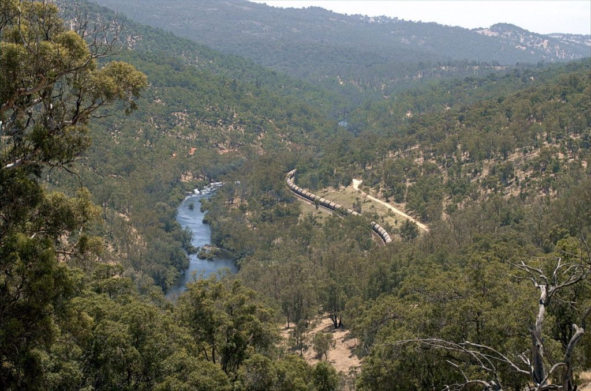
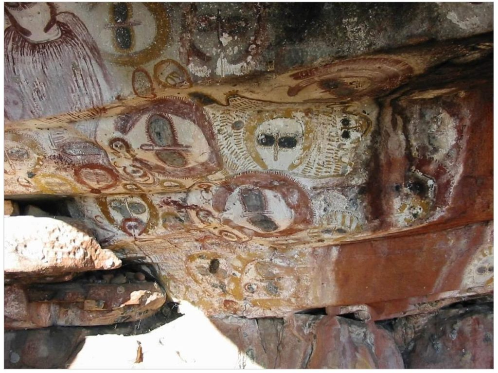
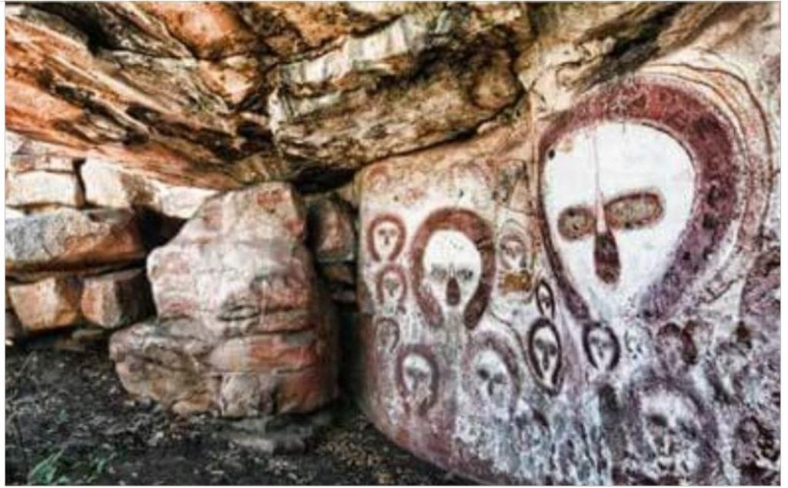
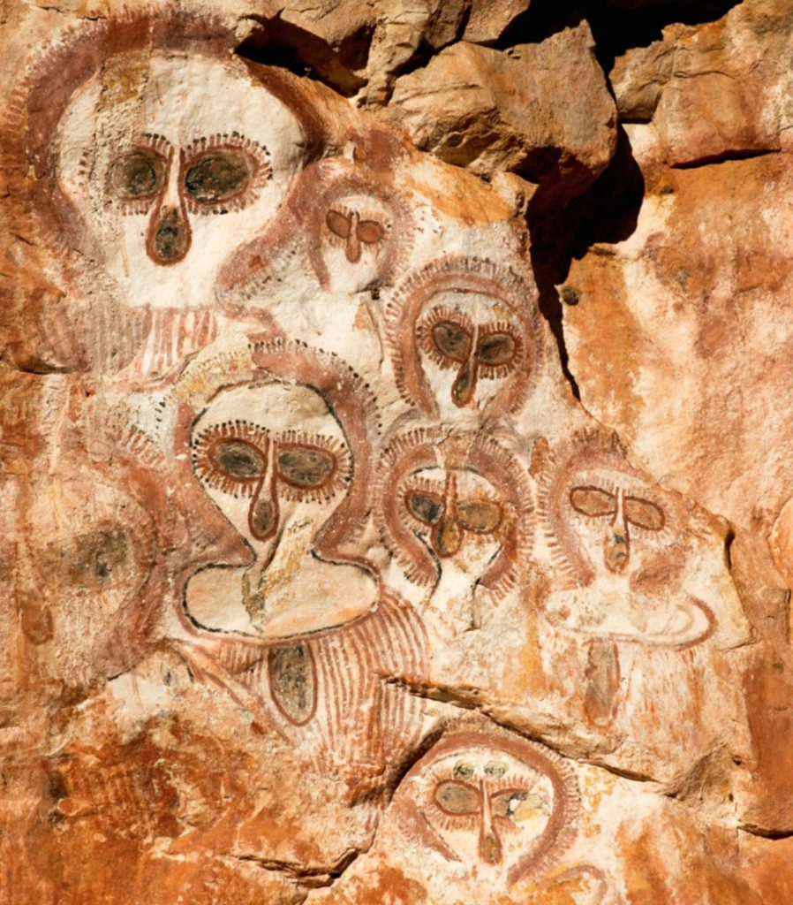
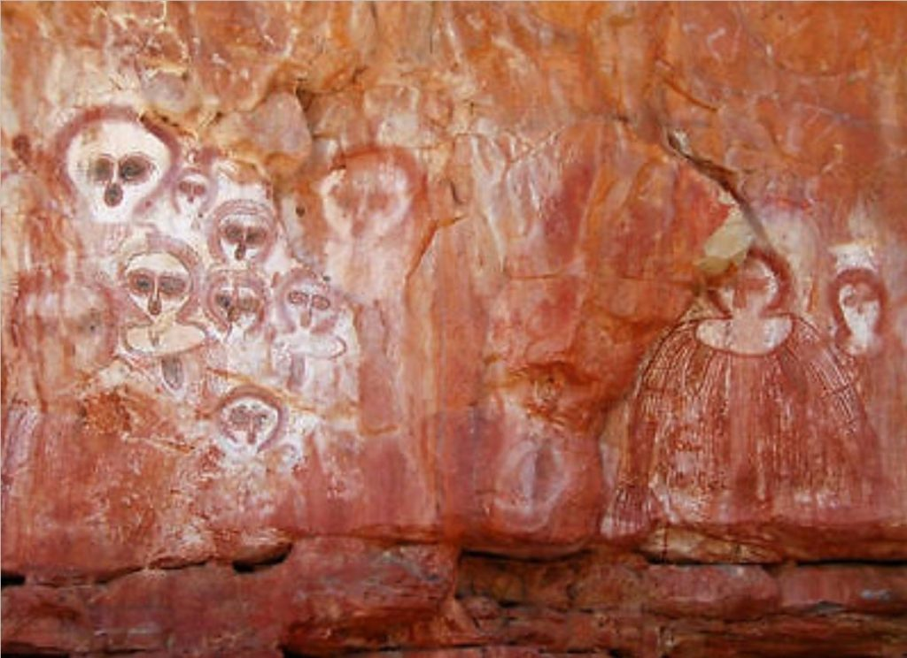

The following is the 17th part from a series of articles describing the adventure that a follower who goes by the handle "daegonmagus" has experienced since reading MM. They are very interesting and fascinating. I hope that you all learn from his journey and maybe learn a thing or two as he relates his unique experiences to the readership here. This particular read is truly enjoyable. I hope you all enjoy it as much as I have. -MM
Part 16 –SD’s Experience With More Consciousness Facilities Courtesy of A Shamanistic Recipe For Lucid Dreaming
Ok, it is late and I am tired, and this article was only supposed to be a brief couple of thousands words. Then all of a sudden I found it blowing out to much more than that, taking me several days, most of which I seemed possessed by this frustrative force that was itching to speak through me. So yeah, uh, apologies for the title.
So here’s basically what happened a few days ago. I was sitting there minding my own business, probably drinking a coffee or eating whatever left over remnants in the fridge could have remotely constituted food, when SD walks in putting on her best authoritative voice.
“I am making you something that you are going to drink that will help you talk to your ancestors through astral projection”.
Uh…um, ok.
Turns out she’d been reading this new book she bought herself for Christmas “The Poison Path Herbal” which she tells me is quite good read. It’s apparently got everything from healing poisons (because I guess all medicines are poisons in the right dosages) to poisons for initiating shamanic like visions.
And these aren’t recipes using everyday ingredients you can find around the house either; some of them call for using things like nightshades, and hembane etc as the active “hallucinogenic” ingredient. If you don’t know what these are I suggest steering right the way clear of them (and no I am not talking about tomatoes or fucking blueberries here either).
Handy hint; apparently foxglove can be used as a heart suppressant at 0.2mg. At 0.3mg, however it’ll caused your heart to stop working altogether. So yeah, small margin of error. Best not to fuck about with any of it.
Now back to me.
An opportunity to ingest some unknown poison to hopefully hallucinate myself into an LD; where do I sign up?
Ok no it wasn’t really like that; SD has a very good understanding and respect of trees and plants, to the point that she talks to them. So when she decides to use them for Shamanic purposes, it is a safe bet she has done her research thoroughly before getting me involved with her antics.
Turns out it was only some mild ingredients she had in mind; a tincture of wormwood and mugwort steeped in water for a good few hours – nothing as toxic as hembane or datura, or fox glove thank fuck.
The idea was to drink it half an hour before bed, go to sleep, in which it would hopefully do its mind expansion job and induce an out of body experience.
Woohay. Or in the words of Professor Frink from the Simpsons: you put the wormwood in the tea, mix it with the mugwort, carry the 2, and the DWIVEN.
I guess I must have built up a tolerance to wormwood in my absinthe drinking days, because – aside from the green fairy’s serenading me to sleep (I joke) – nothing really happened. I had some vague dream about passing an old friend, in my home town but that was about it.
Nothing spectacular.
SD on the other hand, after having only a small sip of the tincture (I sculled the whole lot) told me the next morning it very much seemed to have worked for her.
She had a vivid dream in which she eventually became lucid in that seemed to involve more of the consciousness brainwashing facilities. It was, essentially another dream where higher order information {eventually} came through.
SD and I have this thing going on that whenever one of us has one of these experiences with higher order information, we share it with the other as soon as we get a chance.
So when she comes and says, “I had some interesting shit going on last night” the first thing I do is grab my computer and transcribe her word for word as she goes through what happened.
Usually I can type at lightning speed when I need to, but alas sometimes I miss the tangents she goes off on as she remembers things during the recall.
As a result, some things get missed out, some things get repeated, but generally speaking I am able to capture the body of her experience word for word.
Here’s a transcript of her “shamanic” experience. There is some interesting things in it.
The transcript
“It started off as a normal dream, not lucid, because I was under the influence of some drug.
To begin with, at the very very beginning of the dream, it was just like we were in this town. I was with some other women, (you weren’t there DM) .
And they (our captors), were women, the equivalent of nuns.
They told us the place we were at was a school, but it wasn’t.
The area was equivalent to a couple of fields with dry grass and trees, nothing beyond that – it was really obvious it was a “black void” – yet they told us there was more beyond it.
Some of the others couldn’t see there was nothing beyond, if they were told there was something there they would see it.
It is like everyone was travelling, but in reality it wasn’t more than a field’s worth of travel, the nuns just told everyone we’d been travelling for days and everyone went with it.
Something happened to one of the people, so that the women had to do something; we had to then go to “the airport terminal”.
I remember saying I was “homesick“.
And one of the others said she was homesick too. I am not sure if it was a man or woman; it was like it was either or and didn’t matter in that place.
I remember not being the same as them but they were trying to make me into one of them. So anyway we went through a portal that was in one of the houses at that field place.
A mirror.
And we ended up at the airport.
And it was exactly the same as an airport here – like the layout and everything – but instead of walking onto an aeroplane you walked into a portal in which you could see what was on the otherside.
The portals were just screens, like the movie theatre.
It was the same shit but an airport. The ones we were using were not being used to brain wash people, though there were screens playing stuff to brainwash like the theatre in different areas.
It all depended on the area you were in and who the person was, where they came from etc. There were different portals for different regions of the world, Australia, America etc.
All of the American ones you had to watch a little movie before you went through the screen and that was the brain washing thing.
While they were watching others would come in and give them a bunch of medicine to make them forget….that was the amnesia shit; the amnesia engine was not a machine but a collective of people who go around dosing people with an amnesiac like drug.
All of the checkpoints up until the Australia one you had to see this TV screen and have this medicine.
So, basically just getting to the Australian one you had to be dosed several times. But at the actual portals in the Australian region you didn’t have to be sat down and dosed; you just went in.
The whole Aussie section was pretty quiet and didn’t have guards.
It was like the race of beings that were controlling that section were afraid of the {non physical} beings that lived in the Australian area. They were the same ones dosing everyone and had blue eyes and pale blonde hair, not tall and tanned – not sure if they were Nordics.
I was walking to a portal and began speaking Noongar (Australian Aboriginal Language local to a region of WA) to another guy who was also captured.
I don’t remember who he was, but he also had blonde hair and blue eyes. I don’t think he was a bad one.
All the other captors did not know how to translate this language at all.
One of the guards was trying to explain that this was a language that cannot be translated, as it is too ancient.
When we got to the Australian section it was pretty much empty, no people busy doing shit like in a normal airport. It was pretty quiet, with only a couple of guards standing next to a couple of portals; no drugs or movie theatre things, barely any people.
The guards were taller than regular people, and all wore hooded masks and kit like from my (previous) covid premonition.
When I got to a portal that looked like a mirror that was looking into a mirror like at a local café, I said” oh yeah I gotta go in this one”.
The guy I was with was the only other person with me, because the others seemed to not follow into the Aussie section; they just wouldn’t come in.
One of the nuns said ”no no, there’s things in there we can’t go near it”.
And I remember one of the nuns saying “you are brave going back there” like they really desperately wanted me to stay with them.
So I got to the portal and the dude I was with who was talking Noongar, he said, “oh I am not going in that one, I am going in a different one”.
Where’s that take you, I said “Mundaring”, (local town) and he replied he didn’t know it.
He went in his which I am pretty sure was in the Pilbara (North Western Australia).
The gist I got was that Australian Aboriginals are an ancient race that have been here before anything else and cannot be manipulated by any of the races who came here afterwards.
We were captives, so it was unlikely any of the captives were Aboriginals, as they needed to manipulate us in order to capture us.
Then I remember turning back to say something to the other people…it’s like the guards and I knew each other and the guard kind of said they are gone you are safe to go through right one.
To begin with I went into area I was knowing led to a portal, but I didn’t specifically go to the right one while they were watching; I was intentionally keeping it a secret.
And because WA is huge there are plenty of portals for it.
There was another thing with WA, they had wings/ terminals for each state, and there was much less traffic in WA and a lot less other beings willing to go there.
So not only is it isolated globally but also non physically.
I got the gist of the spirit beings that live here, created the Aboriginals which is why it is such a big deal they are beyond the knowledge of the captors.
So basically I jumped in the mirror and woke up, it was probably of a couple of seconds of random dream.
I was aware that that is what happens when you jump through the portals.
I was lucid from the moment I stepped through into the Western Australian section where they could not follow me anymore.
In the WA section there wasn’t any of those brain washing screens.
The second the drugs wear off you get this trickle of information that comes through and if someone says even the slightest thing to jolt your memory the trickles becomes a large flow of memories.
The amnesia thing is not here, it is there where they are keeping everyone; here (physical reality/earth) is the place that people have either chosen to come or been put in by others in an attempt to remember something or regain a part of themselves.
And then this little addendum based on many of her other LD experiences;
Addendum
This [Australian ] realm has things in it that fucks them (our captors) up. There are ISBE things but not all of them have souls.
Only those that have souls can go into earth bodies, the rest have to make their physical bodies in a lab like a robot.
Only the earth body things, can come here into the physical earth realm.
Non souls are trying to wipe out those with souls; they are drugging all the ones with souls and info and ancient knowledge and real truth etc of what actually happened in the beginning with all of the dream time stuff (Aboriginal Creation Myth), when the physical and non physical planes were merged.
All of the ones with souls are captives because of the ones who don’t have souls that want the greater access to everything.
There (airport terminal) is the simulation, here (physical earth) is real, is seen as extremely volatile and dangerous as the general toxic air part that can degrade parts of a persons consciousness.
But it is also the safest place for us captives to go to get away from the captors as they won’t come here.”
A further elaboration…
Well this just got interesting.
Maybe it is the reason SD and I are able to lucid dream and astral project more successfully than people in other parts of the world.
Because we are protected by a bunch of non physical spirits that created our Native people.
This reminds me of something Airl said in the Alien Interview:
“IS-BEs have been dumped on Earth from all over the galaxy, adjoining galaxies, and from planetary systems all over the "Old Empire", like Sirius, Aldebaron, the Pleiades, Orion, Draconis, and countless others. There are ISBEs on Earth from unnamed races, civilizations, cultural backgrounds, and planetary environments. Each of the various IS-BE populations have their own languages, belief systems, moral values, religious beliefs, training and unknown and untold histories. These IS-BEs are mixed together with earlier inhabitants of Earth who came from another star system more than 400,000 years ago to establish the civilizations of Atlanta and Lemuria. Those civilizations vanished beneath the tidal waves caused by a planetary "polar shift", many thousands of years before the current "prison" population started to arrive. Apparently, the IS-BEs from those star systems were the source of the original, oriental races of Earth, beginning in Australia.”
Then there was this article I stumbled across: (which I subsequently couldn’t access due to it “not being available in my area” for the first couple of tries):
“New research has revealed fascinating details about Aboriginal Australians and Pacific Islanders, who according to experts, carry the genetic material of an unknown human species. The new research suggests people from Papua New Guinea and northeast Australia have traces of DNA belonging to an unidentified, extinct human species. Apparently, there is still much that geneticists and scientists do not understand about this crucial moment in human history, and it seems that research on the subject is raising more questions than answers. In 2016, researchers at Harvard Medical School published the findings of a comprehensive study of the human genome of all areas of the world and discovered something astounding about the Australian aboriginal population. They appear to have genetic markers that indicate they are descendants of a yet unidentified human species. “We’re missing a population, or we’re misunderstanding something about the relationships,” Ryan Bohlender, a statistical geneticist at the University of Texas, told Tina Hesman Saey at Science News. Bohlender and his colleagues have been researching the amount of extinct hominid DNA that modern humans still carry today. To the surprise of many, they say they’ve found discrepancies in previous studies that suggest our mingling with Neanderthals and Denisovans isn’t the entire evolutionary story. “Who this unknown group is we don’t know.” It’s believed that between 100,000 and 60,000 years ago, our ancestors migrated out of Africa, making contact with other hominid species inhabiting the Eurasian landmass. Experts believe that this contact left a mark on our species that is still present today. “Our main goal is to understand how our race got to the point where it is, but in order to do that, we must first study the DNA of the ancient tribes,” explained Mallick Swapan, leading scientist of the study, and an expert who has been studying the origins of the human genome for most of his career. He explained that the new study gathered the genetic data of 142 different human populations scattered around the world that was underrepresented in large-scale studies so far. According to Swapan, the most incredible revelation of this new study is that the genetic code of the Australian Aborigines shows that they carry the DNA markers that indicate the ancient crossbred with an unknown “human” species. Although it was initially suspected that unusual DNA markers might indicate that Aboriginal ancestors interbred with the elusive ancient species known as Denisovans, this hypothesis turned out to be incorrect. After the analysis, scientists discovered that DNA markers were distinct from Denisovan markers, leading them to the conclusion that they had found traces of an entirely new form of ancient human species. It is known that the native peoples of Australia are descendants of the first people who came to the continent from Africa about 50,000 years ago. It has been assumed that aborigines were isolated from the rest of the world for thousands of years and therefore scientists thought that their genetic code would be relatively homogeneous. Surprisingly, this turned out not to be the case. “The genetic signatures of an Australian Aboriginal from eastern Australia and Western Australia are as different as those of a person from Europe and an Asian person,” Swapan said. The incredible diversity in the genetic code of the native peoples of Australia, in addition to the peculiar genetic marker that indicates that they interbred with an unknown human species in the past, indicates that there is still much more to discover about the ancient history of humanity.” - Australian Aboriginal people carry the DNA of an unknown human relative - Ancient Code (ancient-code.com)
Interesting. Let’s dig into this a little bit deeper.
Now, I am in no ways an expert when it comes to Aboriginal culture, but what I do know is that their ideologies are based around what they call the “Dreamtime”.
From the little I have read, according to Aboriginal Creation Myth, the Dreamtime was a period before physical reality came into existence.
It was a sort of vacuous nothingness containing the past present and future all at once that never ended.
The Aboriginals believed that the [non physical] spirits that existed in the Dream Time were the ones that created practically everything in this physical plane; the Aboriginal peoples themselves, the lands, rivers, rocks, plants, and animals were all said to have been a product of these spirits.
I seem to remember Airl taking about the Domain in a very similar context; Airl explained that IS-BEs have been around since before the beginning of the universe. The reason they are called "immortal", is because a "spirit" is not born and cannot die, but exists in a personally postulated perception of "is - will be". She was careful to explain that every spirit is not the same. Each is completely unique in identity, power, awareness and ability. The difference between an IS-BE like Airl and most of the IS-BEs inhabiting bodies on Earth, is that Airl can enter and depart from her "doll" at will. She can perceive at selective depths through matter. Airl and other officers of The Domain can communicate telepathically. Since an IS-BE is not a physical universe entity it has no location in space or time. An IS-BE is literally, "immaterial". They can span great distances of space instantly. They can experience sensations, more intensely than a biological body, without the use of physical sensory mechanisms. An IS-BE can exclude pain from their perception. Airl can also remember her "identity", so to speak, all the way back into the dim mists of time, for trillions of years! Time is a difficult factor to measure as it depends on the subjective memory of IS-BEs and there has been no uniform record of events throughout the physical universe since it began. As on Earth, there are many different time measurement systems, defined by various cultures, which use cycles of motion, and points of origin to establish age and duration. The physical universe itself is formed from the convergence and amalgamation of many other individual universes, each one of which were created by an IS-BE or group of IS-BEs. The collision of these illusory universes commingled and coalesced and were solidified to form a mutually created universe. Because it is agreed that energy and forms can be created, but not destroyed, this creative process has continued to form an ever-expanding universe of nearly infinite physical proportions. Before the formation of the physical universe there was a vast period during which universes were not solid, but wholly illusionary. You might say that the universe was a universe of magical illusions which were made to appear and vanish at the will of the magician. In every case, the "magician" was one or more IS-BEs. Many IS-BEs on Earth can still recall vague images from that period. Tales of magic, sorcery and enchantment, fairy tales and mythology speak of such things, although in very crude terms.” - Alien Interview
Furthermore, it was said that these spirits, or ancestors, played a big part in the selection of sacred sites and how the people were to behave to one another, how food was to be distributed and the rites and rituals of the various tribes etc.
It was also said that during the Dreamtime, certain spirits were able to shapeshift into different animals.
These particular stories seem to change from tribe to tribe, but a common reference can be found in the Myth of the Great Rainbow Serpent, which was said to be one of the Dreamtime Spirits that came from within the earth to create the rivers and gorges as it weaved its way through the featureless landscape.
One of my kid’s favourite bed time books is the version of the Rainbow Serpent named Goorialla, as narrated by Dick Roughsey.
While most stories dealing with the Rainbow Serpent have an element attributing it to water – (rainbows formed from water fall sprays and rituals around water where rainbow like shells and stones are used).
Some researchers have suggested that these myths allude to a possible comet or meteor that fell to the ground, the “rainbow serpent” part being the comets tail.
Interestingly, the tribe from the Great Sandy Desert region of North Western Australia suggests a similar thing with their story of the Rainbow Serpent; that a star fell to earth and created the Wolfe Creek Crater, which the Serpent then took up residence in.
Sometimes this particular rendition includes a story about a hunter who chased a dingo into the crater only to get lost in a tunnel created by the serpent never to be found again, though the remains of the dingo were eventually found “spat out” after being eaten by the Rainbow Serpent.
For the tribe local to our region – the Noongar people – it is suggested the Rainbow Serpent pushed rocks and boulders around to create the trails of Mount Matilda, and was responsible for carving out the channel of the Avon River.
As a side note, the Avon River runs through a beautiful stretch of land called the Avon Valley.
There is an annual competition that is held along this river usually at the end of winter called the Avon Descent, which sees various boating competitors – people in kayaks, canoes and different speed boats etc – race down the river over a period of 2 or 3 days.
Given the rolling green hills in the middle of farmland pastures, the Avon Valley has become a haven for hot air ballooning and sky diving.
It is quite a “dreamy” place to go for a leisurely Saturday drive.

Speaking of dreamy, and getting back to the point of the article, the Aboriginal’s description of the dreamtime sounds a lot like what one can experience whilst lucid dreaming; a timeless void of nothingness where non physical “spirits” seem to hang out.
What is more, when we look at the importance of the Dream Time within Aboriginal culture, and compare it with other tribal cultures such as those of the Native Americans, we can start to see a theme emerging in regards to how important dreaming still is within these cultures.
Both groups would have their appointed Elders and Shamans who would employ the use of various plants and substances to help aid in their dream visions in a similar manner to what SD did prior to hers.
The Wandjina Paintings of North Western Australia
Now, while we are on the subject of the dreamtime and ideas about interactions with the [non physical] progenitors to the Australian Aboriginals, let’s take a look at some art by the Wanjina Wunggurr tribe of the remote Kimberley region of Western Australia.
Unfortunately, I haven’t yet explored this place myself, as it is a 32 hr drive (and that’s straight, with no rest stops) North East of where I currently am, and most of that is bland, boring desert that is usually hotter than Hell in the summer, or too busy being blasted by hurricanes and floods in the other seasons.
That doesn’t mean it isn’t on my to do list though, assuming the local Aboriginals would even allow me into such a sacred site in the first place.
Apparently the Gibb River Road is really a Gem to behold when doing the “Big Lap”.
The paintings themselves are located in the mountainous region of the Kimberley, scattered throughout various caves, in quite hard to reach country.
They were first discovered by white man in 1883, when a man named George Grey stumbled across them after searching for inland water at the behest of the British Crown.
After losing a flock of sheep and a few dogs, Grey and company took refuge in one of the caves, presumably to escape the harsh elements, where they found some very curious images that had been painted high up – some almost 6 metres – on the walls of one of the many caves in the area.
According to Wikipedia, these paintings are between 3800 to 4000 years old, based on the broad stroke way they have been painted.
The paintings themselves depict a group of white, seemingly bald, mouthless, and earless beings with what appeared to be semi circular halos arranged on their heads. Oh, did I mention they had big black eyes:

Next…

Next…

Next…

Firstly, I should point out that these paintings are scattered about an area expanding through 200,000 square kilometres of the Kimberley.
As a result, there are three tribes that have an intimate connection with them and the myths surrounding them; the Worrorra, Ngarinyin, and Wunumbal tribes.
These three tribes make up a cultural bloc referred to as the Wanjina Wunggurr, in which a fourth tribe – the Ngardi – are sometimes included.
According to the descendants of these tribes, the Wandjina were supernatural spirits that existed in the Dreamtime and created the physical world in a similar manner to the Rainbow Serpent.
In fact, some of the paintings include the Rainbow Serpent alongside the Wandjina spirits.
The depiction of the Wandjina without mouths is suggested to be either because the Wanjina were so powerful they didn’t need mouths to communicate, or because, due to their ability to make it rain, had they had mouths, the rains would never stop.
“The shared culture is based on the dreamtime mythology and law whose creators are the Wan[d]jina and Wunggurr “spirits”; the ancestors of these peoples.
The Wandjina paintings have common colours of black, red and yellow on a white background. The spirits are depicted alone or in groups, vertically or horizontally depending on the dimensions of the rock, and are sometimes depicted with figures and objects like the Rainbow Serpent or yams. Common composition is with large upper bodies and heads that may show eyes and nose, but typically no mouth. Two explanations have been given for this: they are so powerful they do not require speech and if they had mouths, the rain would never cease. Around the heads of Wandjina are lines or blocks of color, depicting lighting coming out of transparent helmets.[2] Today, the paintings are still believed to possess these powers and therefore are to be approached and treated respectfully. Each site and painting has a name. Indigenous people of the Mowanjum community repaint the images to ensure the continuity of the Wandjina's presence.[8] Annual repainting in December or January also ensures the arrival of the monsoon rains, according to Mowanjum belief.” - Wikipedia Some of these paintings have been repainted so many times they are 40 layers deep. That’s atleast 400 years worth of tradition being kept up by the descendants of those who hold the original Wandjina story.
Well this is getting interesting now isn’t it?
An author named Erik Von Daniken certainly seemed to think so when he made the connection that the Wanjina spirits kinda looked a little bit those Greys everyone in the UFO community liked to talk about, and offered it as proof of the Ancient astronaut theory. I guess it didn’t help that the Wanjina Wunggurr people also suggested these beings as coming from the sky, causing the rains and floods, painting the pictures themselves before leaving via the same avenue. Or that the white guy that discovered them was also named Grey.
But of course, people with a degree in archaeology or anthropology, that took them only four years to get, know more than the descendants of the oldest known lineage on earth who have managed to pass down stories of their culture unchanged over thousands of years. Take for example these guys from the University of Michigan’s Pesuodarchaeology class, fakearchaeology.com. According to their site the project’s mission is to “explore how and why these [pseudo-archaeological] ideas emerged and took root in popular culture, public consciousness, and on the fringe of rational scholarly inquiry. More importantly, the Fake Archaeology Wiki explores the impact they have on our rational and scientific understanding of the past and human culture.” You can go on the Wikipedia styled page and read all their debunking of various things, one of which is the idea the Wandjina were anything other than a metaphor for weather, as depicted by a bunch of primitive savages that couldn’t tell the difference between some rain and a supernatural being: “Deconstructing the Pseudoarchaeological Narrative The Weather and the Wandjina The pseudoarchaeological narrative of the origin of the Wandjina Petroglyphs revolves around one major theme: the scientific ignorance of early human civilizations. The proposition that the Wandjina were actually aliens visiting from a far away galaxy can be deconstructed by looking at documented archaeological evidence and cultural context. Supporters of the ancient alien belief have established that the mythical powers of the Wandjina, which included abilities such as calling forth torrential rains, flooding, lightning and cyclones, were actually extremely advanced scientific weapons possessed by the travelers. Research into the topic has revealed that the connection between Wandjina and the weather, specifically rain, developed after a period of intense drought that affected the region nearly 4,000 years ago. [8] Evidence from a study done by researchers at the University of Wollongong in Australia indicates that the mega-drought spanned at least 1200 years. “Records shows the Kimberley region of northwest Australia underwent rapid environmental change in the mid-Holocene starting around 6300 yrs. B.P. when it transitioned from a tropical humid climate with intense summer monsoon to a much drier climate. This new climate regime was associated with increased anticyclonic circulation over central and northern Australia allowing a significant increase in dust transport from central Australia to the Kimberley” [8] The study also indicates that this period of intense dryness was “enhanced through positive feedbacks triggered by change in land surface condition and increased aerosol loading of the atmosphere leading to a weakening or failure of monsoon rains”. [8] The end of the mega-drought was between 3,800 and 4,000 B.P. which also lines up with the emergence of the Wandjina style of petroglyphs. The Aboriginal peoples’ reverence for the divine power of rain is an understandable progression in belief after a period of such extreme weather. The concept that the elements were controlled by mythical beings is a common theme that can be seen in different belief systems across the globe (Norse, Greek, Mayan, etc.). Given the native people of Kimberley’s understanding of the natural phenomenon and the limited information available, it would make sense for a group of individuals, who had struggled to survive in such hard conditions, to see the increase in rainfall as a divine gift and in turn begin to worship or revere these spiritual beings as saviors. This logical leap is understandable given the human understanding of weather and climate at the time and does not indicate any intervention by extraterrestrial visitors.”
You know its funny though, I couldn’t find any entries on Noah or the flood, Moses parting the Red Sea, shroud of Turin, Ark of the Covenant, Jesus Christ, God, Angels, or anything else the bible (and its associated thumpers) like to tell us with unrelenting certainty was supposed to have taken place in the last few thousand years.
I guess we should just blindly trust the wisdom of a 2 thousand year old book written by various authors spanning over several periods of time, over the word of a {atleast} 50 000 year old tribe of people claiming they had a direct connection to creators of the physical plane through the dreamtime huh?
I am sorry, but if you are going to use your unfettered wisdom to “look into the things shape the beliefs of certain cultures”, then …
…I expect you to be looking into the religious beliefs that shape a society to the point our governments give their proponents big tax breaks to build temples of worship, for said beliefs, at the expense of people who don’t even believe in them.
But then again, I guess I can forgive the University of a state whose population is made up of 70% people who are orientated to believing in Christian Ideologies, majority of them being Roman Catholic.
This isn’t to suggest I don’t like people of these religions, moreso that there is an obvious perceptual bias when it comes to reading shit from debunking sites such as fakearchaelogy.com directed at ancient cultures and their belief systems.
It’s not like I am going to lose much sleep over a bunch of people who live on a different fucking continent to the people it apparently has an expert knowledge of. At least they got the name right, I suppose.
And while we are on the subject, I guess these “expert” anthropolgists didn’t see any value in extending their research into to what spurred these Christian Missionaries into contacting the “oldest continuing tribe on earth” and preaching to them that their traditional beliefs were “evil and akin to devil worship”: God is a Wandjina - Compass - ABC Religion & Ethics (seriously watch the video and try not to throw up at how carelessly “well meaners” tried to eradicate the Wandjina beliefs, simply because “they knew better”)
Guess it had to do with that “age” thing huh? So now we have the oldest continuing tribe on earth – which according to Airl, extends back 400 000 years who had something to say about the creators, and even drew some fucking pictures of them all over the Kimberley now tainted by the seemingly infant (in comparison) ideologies of a few missionaries that only dates back a little over a two thousand years.
And no one has thought to bring the mentality and psychological disposition of these missionaries into question during their anthropological studies, though they are quite happy investing in researchers to debunk those traditional, work of the devil beliefs?
I’d certainly be interested in a study into the “human” behaviour of those missionaries. Anyone else?
I call bullshit. #fakeanthropology After all, it’s not like white people have a history of stepping on Aboriginal culture for the sake of their own greed or anything……oh wait a minute: Mining firm Rio Tinto sorry for destroying Aboriginal caves - BBC News. Because I am sure Rio Tinto just “accidentally” walked into that site and “accidentally” packed it with a few tons of explosives before “accidentally” going through all Health and Safety checks, before “accidentally” pressing the detonator trigger right 😉? Fourty five thousand years of Aboriginal history gone quicker than you can say “cultural purging”. The whole mentality that the Aboriginals were a bunch of dumb savages in need of some good old fashioned European cultur-ization (as is the narrative we are taught in school) in the form of raping, pillaging and plundering as evidenced by the Stolen Generation (watch The Rabbit Proof Fence) has since been challenged and smashed to pieces by Bruce Pascoe in his book Dark Emu. In it Pascoe quotes the journal entries of many Australian Settlers that alludes to a thriving civilisation that was in some ways even more advanced than them. Stories of intricate fish trapping networks, irrigation systems, the careful cultivation of yam crops, an intimate understanding of the land and its geological structure and the deliberate “engineering” of the soil over many generations to achieve an optimal fertility (which was subsequently destroyed by us dumb arse white men within the span of a few years due to the sheep and plant diseases we brought with us).
These are just a few examples mentioned by Pascoe that show the Australian Aboriginals were a lot more advanced than white man gave them credit for, and suggests an obvious bias put in place to justify the invasion; the “savages” needed a lesson in what constitutes society.
Such bigotry shows through in the writings of these settlers who, rather than dish out credit for one of the intricate fish traps which had the ability to throw a fish in the air when caught, suggests the tribes so mentioned were in need of useless artefacts that they had no need for (which the settlers had become dependant on and could not envision life without).
And what did Pascoe get for his efforts? Our Minister for Home Affairs investigating him for fraud, and “scientists” debunking his claims of course:
And…
And…
You know it is a load of bullshit when the Sky News Murdoch media puppet Andrew Bolt is on board with the smear campaign. If you look close enough, you can almost see Murdoch’s arm protruding out the back of him.
Unfortunately for bolt and his {Gestapo} media and political connections, Pascoe didn’t take the bait and seek compensation. Instead he stood up in front of a bunch of people and offered Bolt this roasting:
I get it though. Kind of hard to expand your pedophile cult’s foothold with Dark Emu’s shadow looming over you, and threatening to call bullshit on your whole parade:
Not that the Australian Federal Police ever bothered to give that cult a “forensic critique“.
But I digress.
Now getting back to the Wandjina Wunggurr, we are missing one important thing when it comes to aliens, and that is hidden in its terminology.
If we dig a bit deeper into this Wandjina thing, we can find the idea that Grey (the white explorer who stumbled upon the paintings in 1838) sparked a bit of controversy by implying the paintings were perhaps depictions of alien peoples not coming from the stars, but from the lands abound over the ocean.
It is suggested that this may have been a result of Grey copying them and instilling his own bias through his European art style.
Take a look at this article by the ABC and tell me it is not a cleverly constructed piece of double speak targeting anyone making the Wandjina/ Alien connection.
“Aboriginal art depicting Wandjina figure that sparked aliens theory to be reclaimed by traditional owners
By Erin Parke
Posted Mon 5 Dec 2016 at 6:09amMonday 5 Dec 2016 at 6:09am, updated Mon 5 Dec 2016 at 6:17amMonday 5 Dec 2016 at 6:17am
George Grey’s 1838 drawings of the Wandjina cave caused speculation about the paintings’ origins.(Supplied)
Aboriginal families in Western Australia’s north are finding ways to reclaim a sacred image that sparked rumours of Arab voyages and aliens during the early days of British exploration.
The large, looming Wandjina are spirit figures drawn on thousands of cliffs and cave walls in the Western Kimberley, and came to national prominence when they featured in the Sydney Olympic opening ceremony.
Worrora woman Leah Umbagai said they were considered sacred by three tribes in the area.
“The Wandjina is a supreme being that created the country, gave us the laws of the land, and we have to obey and follow it,” she said.
“The Wandjina is not just a big picture on the wall, it’s the trees, it’s the rocks, it’s the water, it’s the seasons, it’s everything … it lets us Wandjina people know who we are, and how to live our life.”
But the history of white contact with the Wandjina is marred by misunderstanding and wild theories that remain deeply hurtful to the Worrora, Ngarinyin and Wununbul tribes to this day.
British explorer seeking ‘inland sea’ stumbles upon artwork
In 1837, explorer George Grey embarked on a bold but misguided mission to penetrate north-western Australia.
It was thought a large, inland sea might exist in central Australia, and the British government and the Royal Geographical Society sponsored Grey and his team to explore what is now the Kimberley region.
Author Mike Donaldson has written extensively on Kimberley rock art and its discovery by settlers.
“Grey and his men came straight from England and South Africa to the Kimberley, and to cut a long story short, they struggled to get inland, they had a mob of sheep that all died, their dogs died, and they were attacked by Aboriginal people at one point,” he said.
“But then somewhere along the line they just came across these Wandjina pictures on a cave.”
Grey sketched several of the Wandjina in his journal, complete with big rounds heads, halo-like head-pieces, large eyes, slim nose and no mouth.
The images caused quite a stir when they were published back in Great Britain.
“They were totally unlike anything that people had reported from Aboriginal rock art in Australia before,” Donaldson said.
“They thought they could not have been done by Aboriginal people.
“They thought they must have been done by shipwrecked sailors, or some other culture of people that visited here.”
He said one of the figures appeared to be wearing a full gown, and what Grey interpreted as writing on the headband, which people thought could be Arabic or Chinese.
“But it wasn’t anything of the sort, it was an older painting showing through, where the painting was wearing away a bit,” he said.
Pictures fuel Australian ‘alien’ landing theory
The misunderstanding fuelled theories Asiatic or Middle Eastern people at one time occupied the Australian continent, and set the scene for an even more offensive proposition — that the Wandjina were drawings of aliens that visited prior to white settlement.
The theory emerged in the 1968 book Chariots of the Gods? Unsolved Mysteries of the Past, which was written by Swiss author Erich von Daniken, and detailed examples of ancient civilisations that could be evidence of alien life form.
Donaldson said the theory never gained much traction.
“It was just ignorance on von Daniken’s part, the kind of ignorance that goes back to the people who initially, 100 years ago, thought that Aboriginal people were not so sophisticated enough to do those paintings,” he said.
“Of course we soon learnt that they were very sophisticated, and could paint all these wonderful things … so that’s just one guy’s crazy story, that thought they were space men or something.”
Traditional owners hope to educate public
It is a source of ongoing frustration for traditional owners like Ms Umbagai, who until recently managed the Mowanjum Art Centre.
“A lot of the people that come into the art centre, they ask so many questions, and yes I suppose there have been UFO sightings in America and all of that, but it just really saddens me that they say things about it,” she said.
“It’s like people are making fun, or think we’re making things up, and it’s hurtful for us.”
Efforts are underway to reclaim the image, including high-tech 3D imaging used to create a life-size Wandjina cave at the Mowanjum Art centre, so local Aboriginal children and tourists can learn about the importance of the rain-making spirit figure.
Families are finding ways to revisit the remote bush caves where the Wandjina live, to care for the sites and touch up the paintings.
It takes several days’ driving or an expensive helicopter charter to reach many of them, but native title agreements, marine parks and remote ranger programs are making the trips more possible.
Ms Umbagai has been able to visit the caves that featured in Grey’s journal more than 175 years ago.
“When I’m out there, I’m just so at home. Because I’m at artist, I love sketching everything I come across, so I’ll just sit there are draw them myself,” she said.
“But just looking at the paintings and knowing that our old people used to walk this area and sit here, and knowing this is what they left for us … it’s very special.”
…
Wow. If that constitutes journalism, then I am in the wrong business. It’s one thing to peel through page after page and present it as information in an effort to actually inform people of the point you are trying to make.
It’s another thing completely to omit that very point and twist all scrutiny in a different direction in an effort of deflection.
Let me ask a few questions and see if you can answer them: what was the narrative Ms Umbagai was upset with again?
Was it the suggestion that the paintings of the Wandjina were depictions of some white European settlers who came before those in recorded history, or was it more so at the idea that Danikan suggested the Wandjina were ancient astronauts?
One minute they are talking about Arabic and Asian visitors, the next they are talking about space aliens, wrapping it up with a vague explanation of some UFO visitors from America making fun of the paintings without providing any context to understand which it is Ms Umbagai is even talking about.
It’s even worse when you try to get an actual Aboriginal account of the myth from the internet; everything about the Wandjina seems to be written from the vicarious perspective of a {presumably} white person.
This is understandable, given many Aboriginal tribes exhibit a somewhat distrust for sharing such stories with those outside their clan.
In fact, SD has a friend who is an honorary member of a local clan.
It took her four years at university learning about their culture and several years worth of contact building, interacting with the tribe she is an honorary member of before she could even be considered.
As a result of her hard work, she is allowed to attend meetings held by the Elders.
Yet, even she is met with exclusion when it comes to the more “important” secrets of the clan. But yeah, I suppose those anthropologists over at fakearchaeology don’t give a shit about her opinion.
So when it comes to knowing the real story behind the Wandjina, it is likely it has remained as a true secret shared only among the Wanjina Wunggurr.
However, what we can take from Ms Umbagai’s brief statement is this: “It’s like people are making fun, or think we’re making things up, and it’s hurtful for us”.
This suggests to me that the story of the Wandjina, at least to the Wandjina Wunggurr descendants, is taken to be meant in a very literal sense, and if one distorts it from its literal meaning it becomes offensive to the tribe continuing on the story. In other words, it suggests that they firmly believe the Dreamtime was a real, non physical place that existed before the physical plane, and that their people “witnessed” when this physical plane was created. Of course, those with Wanjina Wunggurr blood are welcome to tell me if I am wrong in this assumption.
If I am not totally of the mark with the above statement, this suggests that the Wandjina Wunggurr people were at some point non physical based, for that is the only way they would be able to witness the physical world coming into existence.
I guess being someone who has astral projected and lucid dreamed many, many times, it is alot easier for me to conceptualising existence from a pure consciousness state sans a body, than most.
So what if it wasn’t space where the Wandjina originally came from, but from the astral/ dreaming realms; the same realms that I was told were important communication conduits for non physical entities to interact with physical ones by the Elder Guardians?
The same realms I understand as being important for the evolution of human consciousness.
The same realms that can be accessed for higher order information about the cosmos and our origins through the mastery of Lucid Dreaming?
Again I find it funny fakearchaelogy.com never bothered to debunk the Ancient Sumerian Epic of Gilgamesh while they were at it, given it seems to point to a very similar – albeit brief – creation narrative as that of the Wandjina, except with some names thrown in.
“The main source of information about the Sumerian creation myth is the prologue to the epic poem Gilgamesh, Enkidu, and the Netherworld (ETCSL 1.8.1.4),[53] which briefly describes the process of creation: originally, there was only Nammu, the primeval sea.[54] Then, Nammu gave birth to An, the sky, and Ki, the earth.[54] An and Ki mated with each other, causing Ki to give birth to Enlil.[54] Enlil separated An from Ki and carried off the earth as his domain, while An carried off the sky.[55] Enlil marries his mother, Ki, and from this union all the plant and animal life on earth is produced. In the Sumerian version of the flood story (ETCSL 1.7.4), the causes of the flood are unclear because the portion of the tablet recording the beginning of the story has been destroyed.[66] Somehow, a mortal known as Ziusudra manages to survive the flood, likely through the help of the god Enki.[67] The tablet begins in the middle of the description of the flood.[67] The flood lasts for seven days and seven nights before it subsides.[68] Then, Utu, the god of the Sun, emerges.[68] Ziusudra opens a window in the side of the boat and falls down prostrate before the god.[68] Next, he sacrifices an ox and a sheep in honor of Utu.[68] At this point, the text breaks off again.[68] When it picks back up, Enlil and An are in the midst of declaring Ziusudra immortal as an honor for having managed to survive the flood. The remaining portion of the tablet after this point is destroyed.[68] In the later Akkadian version of the flood story, recorded in the Epic of Gilgamesh, Enlil actually causes the flood,[69] seeking to annihilate every living thing on earth because the humans, who are vastly overpopulated, make too much noise and prevent him from sleeping.[70] In this version of the story, the hero is Utnapishtim,[71] who is warned ahead of time by Ea, the Babylonian equivalent of Enki, that the flood is coming.[72] The flood lasts for seven days; when it ends, Ishtar, who had mourned the destruction of humanity,[73] promises Utnapishtim that Enlil will never cause a flood again.[74] When Enlil sees that Utnapishtim and his family have survived, he is outraged,[75] but his son Ninurta speaks up in favor of humanity, arguing that, instead of causing floods, Enlil should simply ensure that humans never become overpopulated by reducing their numbers using wild animals and famines.[76] Enlil goes into the boat; Utnapishtim and his wife bow before him.[76] Enlil, now appeased, grants Utnapishtim immortality as a reward for his loyalty to the gods.” -Wikipedia. Epic Of Gilgamesh
SD’s experiences in connecting with her higher intelligence seems to tie both the Epic of Gilgamesh in with the Wandjina legend perfectly, and explain that whole flood thing most information of which was apparently lost.
This is a summary of information she gleaned from a lucid dream in which she was able to connect with her Higher Intelligence, which was included in my autobiography:
“Firstly the Fae (faery) beings were on earth. At the same time there were various types of humans (Neanderthal included) and at that time, the physical and astral realms were tethered to each other and you could walk through each easily like walking over a bridge or through a door; there was no need to fall asleep to detach the consciousness from the physical body because on earth they could manipulate the matter body to become light body and astral body at will.
Many alien races negotiated permission with the intelligent and powerful humanoid Fae beings, to be on earth to experiment with types of “human”.
Each alien race was appointed an ancient human to manipulate their DNA and try to create a being that could change from astral to light being and back to matter body without the need for technology or sleep, as was the norm for many beings on earth at the time.
An ascended race (the angel beings) covertly came to earth and experimented with all creatures including the other alien’s experiments.
They didn’t gain permission to be in the realm let alone do these experiments. What they did was basically like grabbing the united universal treaties and tearing them to pieces.
They are an ascended race so it was considered even more of even more a no no; they were supposed to remain as a neutral party to oversee these experiments, not partake in them.
So when they were done, they flooded the world to get rid of the evidence.
Some of the ascended race found out what these rebel factions did and went in to try and fix what they could.
They saved as many creatures and humans and Fae that were trapped and aliens as they could and put them on their ships until the flooding ceased.
While there were no active Fae on the matter plane to hold the magic at the sacred places, the gates/portals/bridges between realms collapsed.
The beings put the creatures and aliens back on earth but all were trapped as there was not a clear way back out to the other planes and worlds any more.
Some star seeds are incarnated “fallen angels” that fell to save Earth from the rebel faction and are now stuck incarnating in matter bodies until enough magic knowledge is accumulated through the build-up of DNA of the practically wiped out intelligent humanoid Fae race – the original people of this planet earth.
That knowledge and magic is needed to reopen the sacred points.
The witches are the Fae beings in question; the original witches are not just a religion but the original inhabitants of earth – but the world has been misused and misguided for centuries to hide and confuse the truth so that everyone believes they are evil and even culling witches has occurred through history to try to keep the numbers low to keep the re merge from occurring.
This is because the rebel faction are high ranking beings and the leaders know what they did and possibly condoned it. The information is being hushed so that particular race won’t suffer the consequence of them meddling in the experiments.
It will mean a much more severe war, as the mediators to all universal courts and rulings are the same race of rebels that messed around and flooded the place to try cover their tracks.
Can you imagine what will happen if all the races find out that the high court leaders and mediators are actually covertly stealing scientific research and trying to manipulate experiments to benefit them?!
Absolute chaos.
So now on earth, we are stuck in reincarnation cycling round and round and the “amnesia” is a result of the sudden severing of the two “world’s” matter and astral, on this base level/plane.
All of this has a butterfly effect consequence on the other base world’s causing chaos and war through the universe.
That’s the current astral war; everyone is blaming everyone else and trying to gain access to the next level/ plane too have the magic that’s been harvested from earth herself in an attempt to get things going again.
But it’s the witches that need to do it through their personal gate keeping magic.
If there’s not enough of them living how they need to live – not like society dictates but how they legit need to exist, properly connected to the earth – then it won’t happen.
Not to mention all that know what actually happened are trying to cover it up and poison as much of the population as possible in case the DNA of the old Fae – the witches …
… pops up in an incarnation of say – one of the fallen angel types-…
…thus allowing for the knowledge to be “read” and brought forward …
…- as these beings (fallen angel) were of the ascended race so they have the ability to keep a fair bit of knowledge.
Knowledge that the human mind is usually unequipped to handle (often resulting in the human body or mind becoming weak or confused or ill.. etc.. as too much over stimulation becomes a burden to the human vessel over time).
Hold up didn’t Airl mention the Domain were the Annunaki?…
“On land, The Domain Search Party members were referred to as "Annunaki" by the Sumerians, and "Nephilim", in the Bible. Of course, their true mission and activities were never disclosed to homo sapiens. Their activities have been purposefully disguised. Therefore, the human stories and legends about the Annunaki, and the other members of The Domain Search Party have not been understood and were badly misinterpreted.” - Alien Interview
….and the Annunaki are the very gods mentioned in the Ancient Sumerian Epic of Gilgamesh, right?
So, could it be the Wandjina came into contact with the Domain or a civilization utilising similar doll bodies through lucid dreaming and were given similar information to Matilda McElroy when she interviewed Airl after the 1947 Roswell Crash?
Or could it be they just simply tapped into higher order information about the same flood that caused the separation of the astral and physical planes that both SD and the Ancient Sumerians seemed to be talking about. Who knows, maybe the three are all just coincidences right?
Let’s look a few points I have been trying to get across since the beginning of my articles, and I quote myself from said articles:
- “The “Grand Elder” – as I called him – told me there was a sort of spiritual amnesia affecting mankind.”
- “He said that the human brain had been deliberately engineered to cut them off from this state of [higher] awareness that I was now experiencing.”
“The reason, he said, that I had been summoned before them, was because of my abilities at lucid dreaming. Apparently what I had learned through years of experimentation was considered so advanced by them, that very few people on earth possessed these same abilities; the amount of others who apparently possessed these abilities could be counted on one hand. Apparently, according to these Elders, anyone who demonstrated these abilities were held in high regard by them, as it allowed them the opportunity to communicate with those back on the physical plane without it being compromised by external forces.” - Part 1: Contact with the Elder Guardians
“I cannot stress how important Lucid dreaming really is for the evolution of human consciousness.”
Part 15 – LD Lesson 4: Advanced LD Practices and Potentialities
And then there was this in regards to a Native American like tribe on a different planet (in case you didn’t get the subtleties, I was implying that they may have been the progenitors to the Native American culture):
“I had somehow found myself on another planet watching a tribal Elder of a humanoid race of people talking to his tribe. I was completely lucid, in that I could remember my body being asleep back in my bed on earth. These people, although completely alien to any human species on earth, had a very Native American vibe to them. All of a sudden the Elder realized I was there, observing them.” – Part 1: Contact with the Elder Guardians
And finally, we have a few clues as to who SD is directly from the Domain Commander himself:
“[SD] was / is an IS-BE of extraordinary (with a great emphasis on the word – MM) ability. Were she to be in our society, she would easily fit within powerful leadership roles.
[SD] was / is a past regarding trans-stable dimensional elder / tribal leader of a community of other trans-dimensional trans-universe IS-BE's that occupy communities that lie outside of the Domain, and the Master Universe. - Metallicman, EBP Q&A with the Commander from The Domain a November 2021 episode
Phew. I apologise for laying down so many quotes all at once, but I felt it necessary to highlight the obvious, consistent themes, so we can get a better idea of just what the fuck SD’s experiences mean.
From what I can determine, SD seems to be gaining, through lucid dreaming, information about a history of the earth that predates what even the Domain have on record. Like, a real ancient fucking history. Close to the creation of the physical world type ancient. And these experiences are directly related to stories interwoven in Aboriginal culture as well as being seemingly related to the myths of the Annunaki. Not only that, she is giving us a base line of what needs to happen to get out of the reincarnation cycle. The physical and non physical planes must be re merged, through the use of certain *keys* who have had their astral bodies tampered with.
Given my own experiences with LD, I posit that any ancient culture that invested time in dreaming to the point it became part of their main belief system, was likely in contact with non physical entities and had access to similar information. It seems logical to me that without the distractions of convenience that plague a modern society, a culture cultivating such an understanding of the dream world, would be far ahead in regards to cosmological knowledge and knowledge of our origins. Especially if left to their own devises and that understanding was allowed to thrive within their community unimpeded.
Given this deduction, I would similarly suggest that both the Native Australian and Native American tribes, amongst others would have been sought for contact by similar entities that sought me out due to my LD abilities. After all I was only playing around with consciousness via LD over a mere decade. Imagine the sort of intelligence that could have been revealed to a people that practically worshipped dreams for thousands of years before white man came and told them it was nothing but devil worship.
Now, whether or not the Wandjina were interdimensional entities that visited the Wanjina Wunggurr people can only really be left to speculation, but I find it curious their story is a mirror reflection of things Airl told us. And that their paintings depict a similar image to the doll bodies the Domain use (Skinny Bob). Regardless, I will take the word of an Elder, or even descendant of these tribes over that of a bunch of fake archaeology students any day. If the Wanjina Wunggurr people come and tell me I am wrong in my assumptions, then I will graciously accept it.
What I find interesting, and what should be taken away from all this is that SD’s experience allude to a similar sort of spirit presiding over the non physical planes in this same region that provides a degree of protection from other {non physical} entities that have a much more malevolent agenda. Note that her experiences suggest there are various dream portals littered about, that each continent is regulated, and that a tribe in close geographical proximity to the Wandjina are from such an ancient lineage and as a result that no meddling non physical entities are able to understand their original language. The idea that the astral and the physical planes must merge, is something that I find very interesting, because, as you will see in the next article, SD is not the only one I know of who has said this.
You can visit the daegonmagus Index here…
MM Articles & Links
You’ll not find any big banners or popups here talking about cookies and privacy notices. There are no ads on this site (aside from the hosting ads – a necessary evil). Functionally and fundamentally, I just don’t make money off of this blog. It is NOT monetized. Finally, I don’t track you because I just don’t care to.
- You can start reading the articles by going HERE.
- You can visit the Index Page HERE to explore by article subject.
- You can also ask the author some questions. You can go HERE to find out how to go about this.
- You can find out more about the author HERE.
- If you have concerns or complaints, you can go HERE.
- If you want to make a donation, you can go HERE.